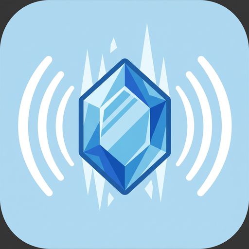

Select text anywhere. Press ⌃⌥S. Hear it.
Works without an internet connection. Nothing to sign up for.
Free · 170 MB · Apple silicon · macOS 14 or later
or brew install --cask guymorita/tap/moxspeak
Select any text, anywhere, then press
Control + Option + S
macOS has had text-to-speech for decades, and its voices still sound like text-to-speech. MoxSpeak uses Kokoro, an 82-million-parameter open speech model that is small enough to run in real time on a MacBook Air and, to most ears, sounds better than the premium voices Apple ships.
The whole model is inside the app. There is nothing to sign up for, nothing to start, and nothing that stops working on a plane.
| Key | What it does |
|---|---|
| ⌃⌥S | Speak the selected text |
| ⌃⌥D | Pause or resume |
| ⌃⌥X | Stop |
All three are rebindable from the menu, under Keyboard Shortcuts.
Apple silicon (M1 or later) and macOS 14 Sonoma or later. Intel Macs cannot run it: the model runs through MLX, which is Apple silicon only.
That is expected. MoxSpeak has no window and no Dock icon; it puts a small diamond in your menu bar. If you cannot see it, check whether a menu bar manager such as Ice, Bartender or Hidden Bar has filed it under hidden items, which is where new icons usually land.
It is the only way on macOS to read the text you have selected in another app. Without it MoxSpeak still works, but it reads whatever you last copied instead, so you have to press ⌘C first.
The voice model is inside the app rather than downloaded on first launch. That is what makes it work offline, immediately, with nothing to configure.
Drag it to the Trash. If you want the settings gone too, choose Advanced → Reset MoxSpeak first, which clears the preferences and the log.
Source-available. You can read, build, modify and audit it; redistributing it is not permitted. It is public because you should not have to take anyone's word for what an app with Accessibility access does with it.
Yes. The text you select never leaves your Mac. The voice runs on your own machine, so there is nothing to send anywhere and no company on the other end of it. The same goes for your clipboard, your files, and the names of the apps you use.
MoxSpeak does send anonymous crash reports and a count of things like "the app launched" or "speech started", so bugs get fixed without anyone having to write in. That is all it sends, it is not tied to you, and you can switch it off under Advanced → Send anonymous usage stats. The full list is in the source if you want to check rather than take my word for it.